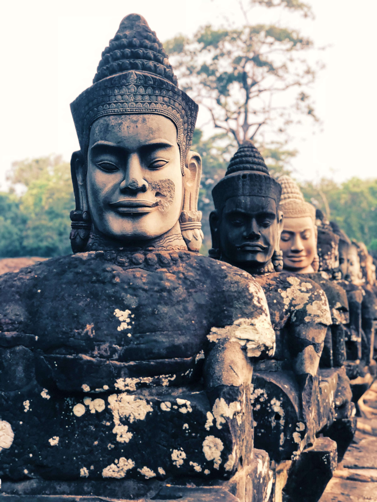
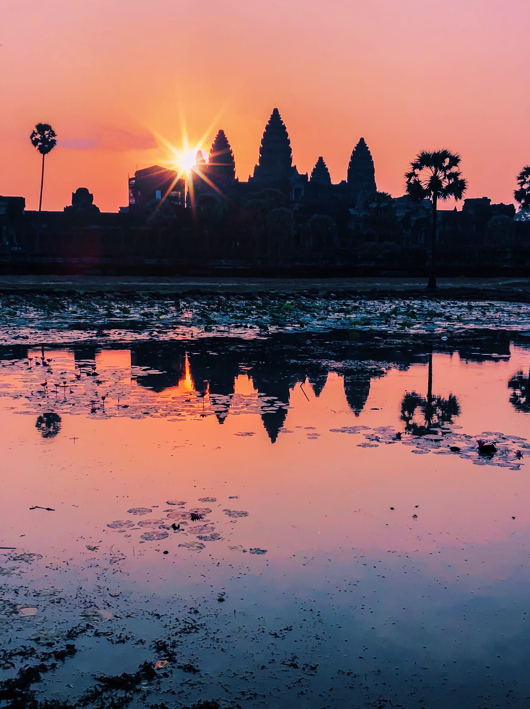
Five days, three cities, one phone in my pocket. Cambodia keeps the twelfth century and this morning in the same frame without apology — gods and demons guarding the gates, a monk blessing the motorbike a family arrived on, grilled fish under a bare bulb, a face in the crowd with a blade at its tongue. Here is what I saw before the light turned ordinary.
We came before the sun. At that hour the largest religious monument on earth belongs to almost no one — the cold, the frogs, and five towers holding their shape against a sky that hasn’t chosen a colour yet. Then it catches fire behind them, and every phone on the causeway goes up at once.
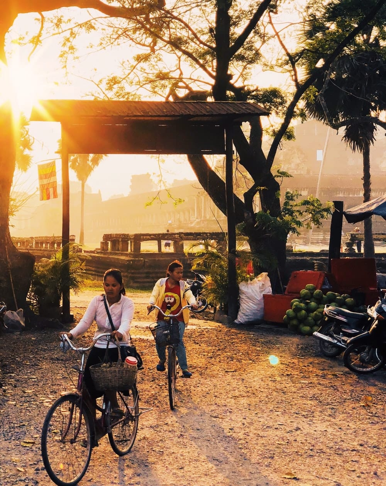
North of the temple, a bridge crosses the moat into the walled city of Angkor Thom. Fifty-four gods hold one side of it, fifty-four demons the other, each row hauling on the body of the same stone serpent — a tug-of-war frozen for eight hundred years. You pass between them to get in.
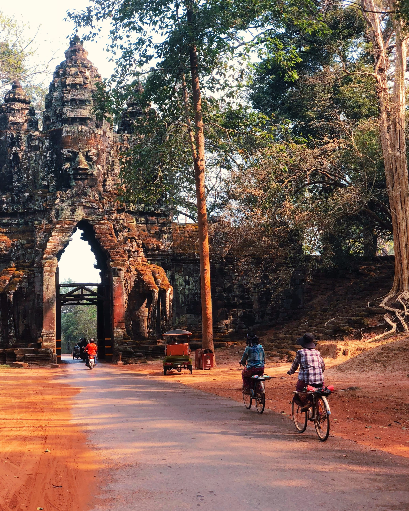

The country is full of monks, and none of them behave the way the postcards promise — they fist-bump after a blessing, hold a pose for a portrait, then go straight back to their phones.
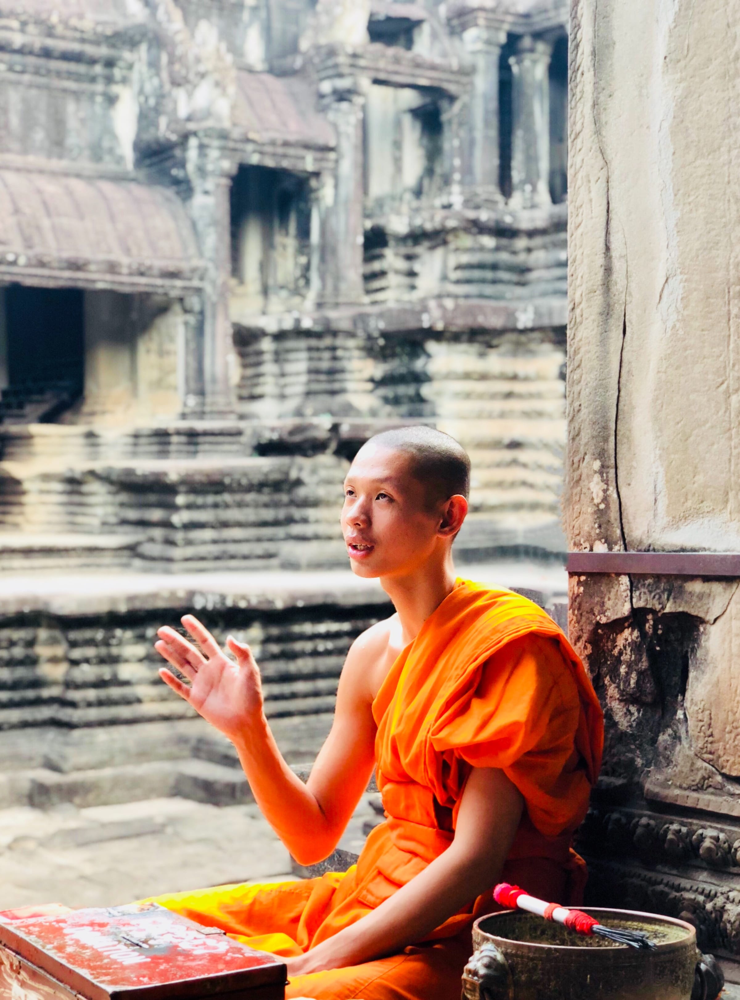
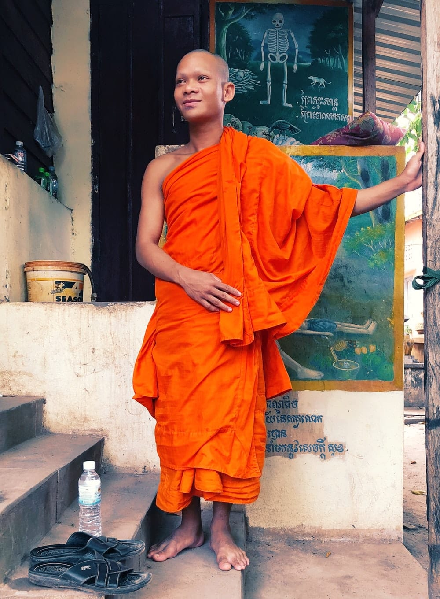
One I met drinks Red Bull, carries a battered iPhone 4, and — of course — is on Instagram.
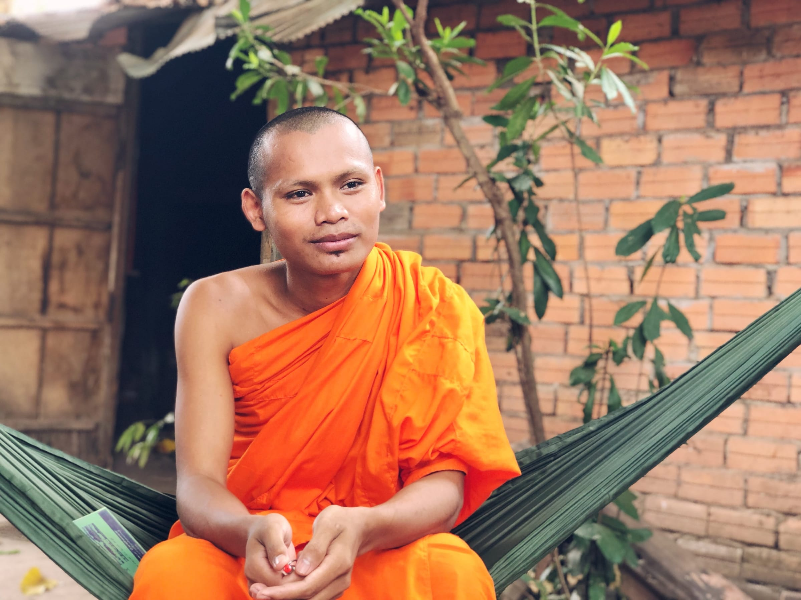
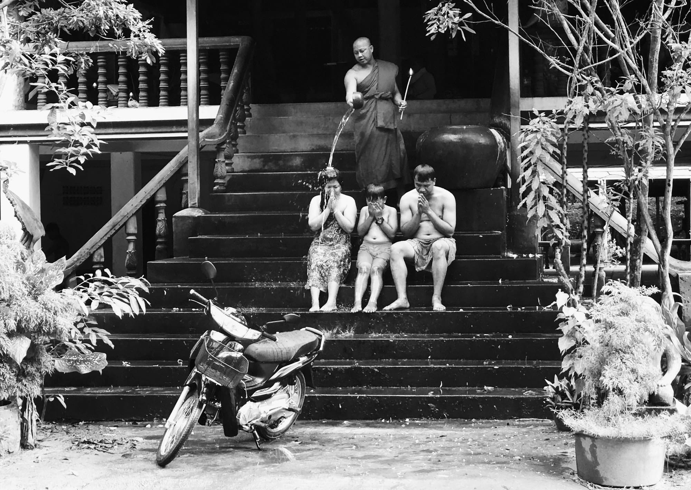
Then Ta Prohm, the temple the jungle refused to give back. Strangler figs have poured over the walls like candle wax, roots the width of a person holding the stone up and prising it apart in the same slow grip. It’s the one they filmed Tomb Raider in. It’s also the one that looks least like it was ever ours to build.
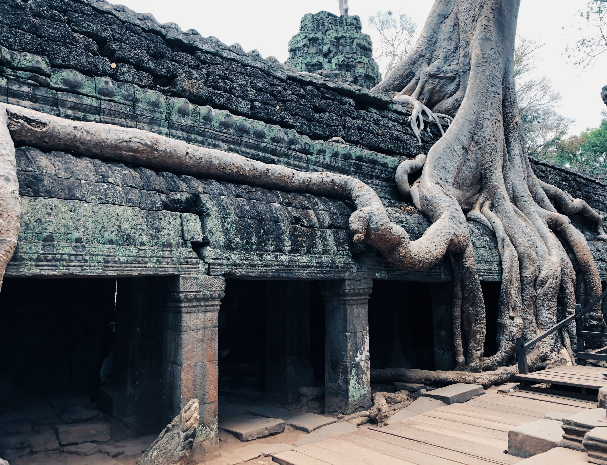
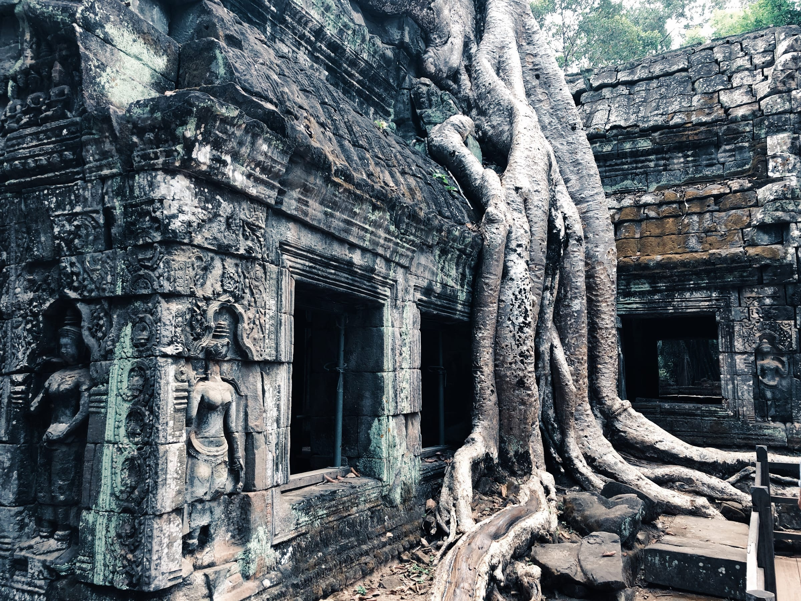
After dark, the food gets braver. The famous dare comes first — three tarantulas, deep-fried whole, legs curled, with a wedge of lime and a peppery dip. Crisp shell, soft inside, and honestly not the ordeal the guidebooks promise. Past the spiders it’s a proper night market: river fish blackening over embers, women sorting the day’s catch on the ground by torchlight, fish amok steamed soft in a banana-leaf cup. You eat standing up, under a bare bulb, and most of it is better than it has any right to be.
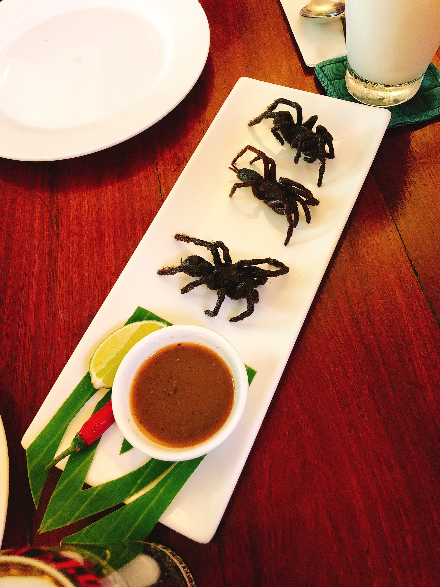
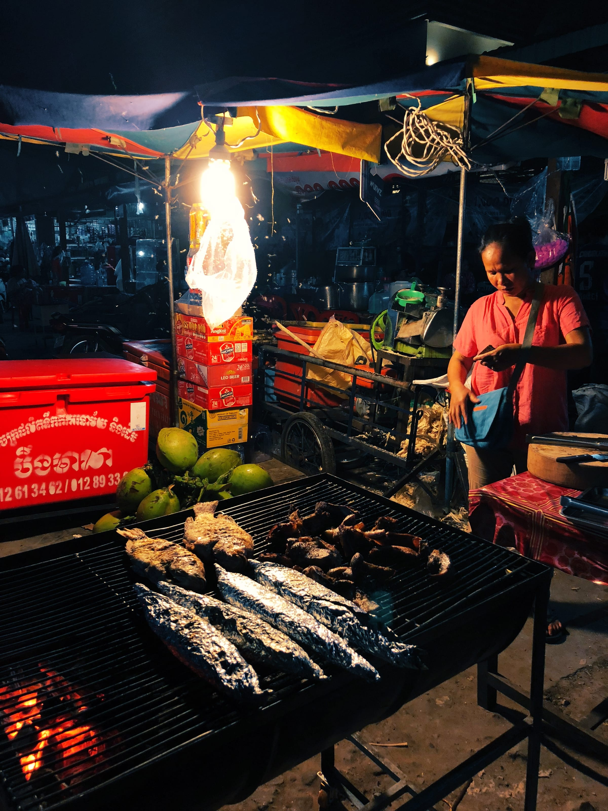
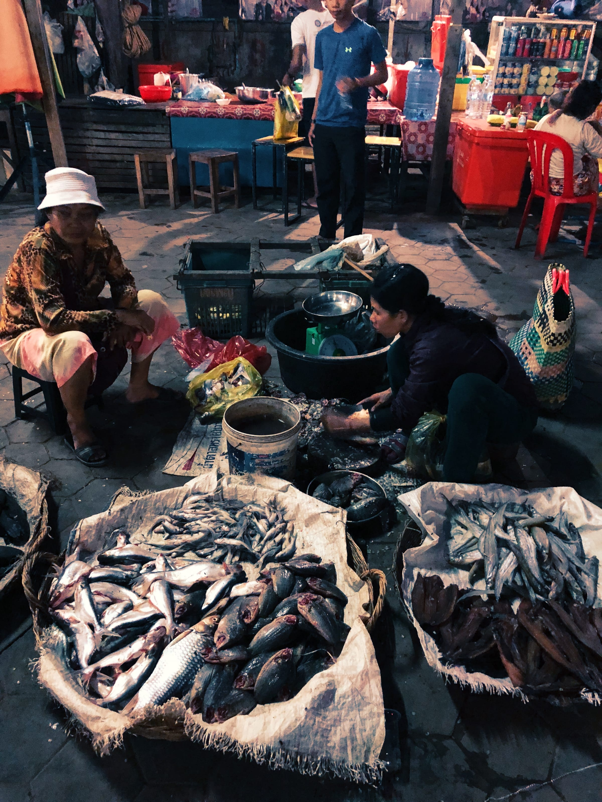
The capital kept its strangeness for last. At a festival on the edge of the city, entranced mediums drew blades across their own tongues and cheeks — steel through skin, a bead of blood, and then a calm that didn’t match what I’d just watched. No one explained it. I’m not sure anyone could.
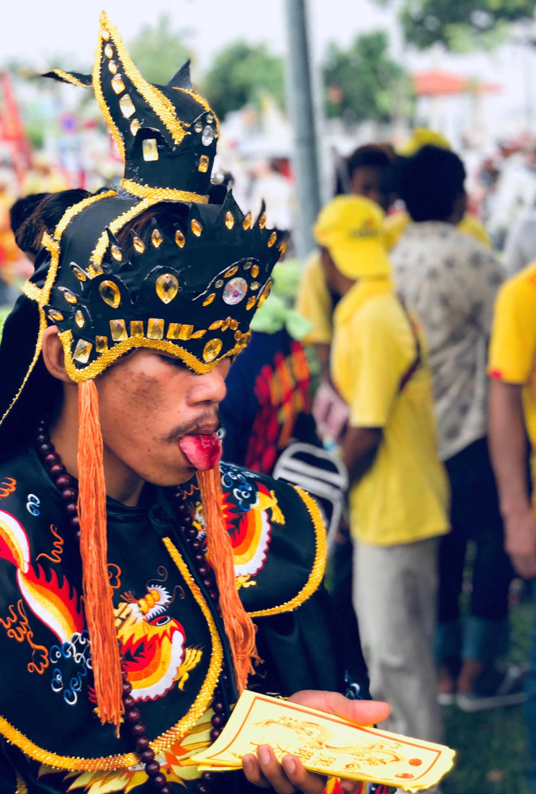